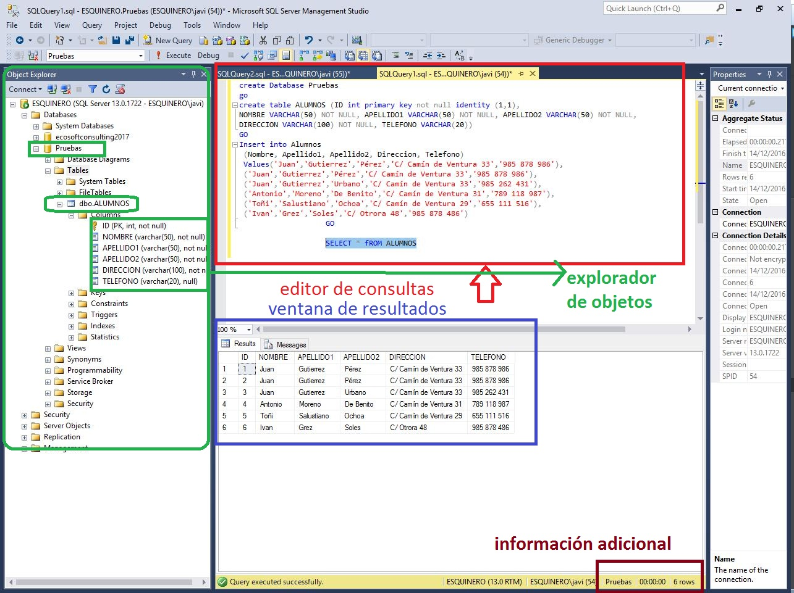
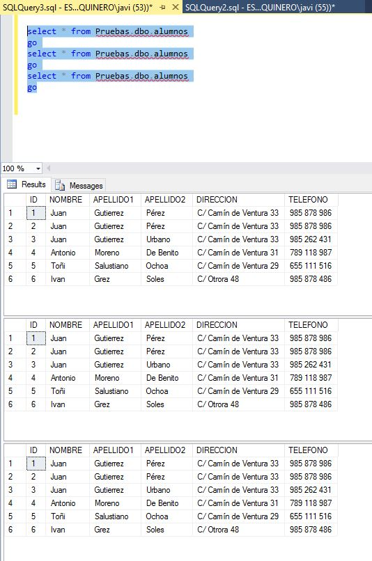
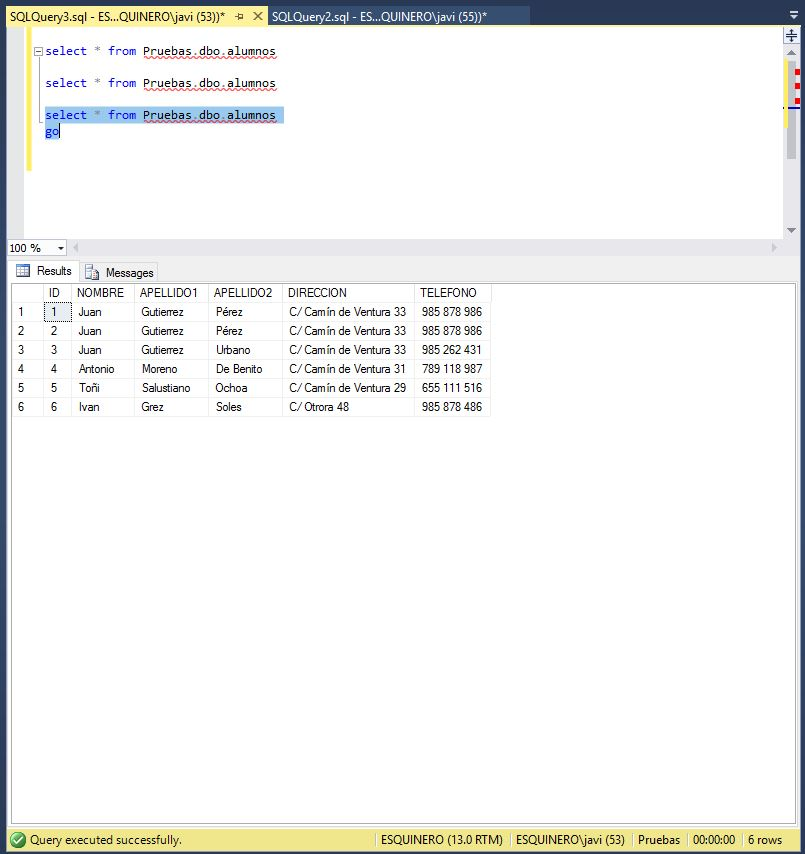

Select. El dios del lenguaje Sql
El inicio de todas las lecciones, se realizará con la base de datos ya conectada como ya hemos visto. Si tienes algún problema sigue este nuevo manual. Página de conexión
La instrucción select, nos permite recuperar información de nuestras tablas de forma simple.
En el capítulo 1 vimos como se hacia un Select * from Alumnos, y nos devolvía una rejilla en formato tabular con nuestros resultados.
Ahora nos toca trabajar un poquito con el editor, o al menos, ver sus particularidades, para poder empezar.

En la zona del explorador de objetos, observamos la base de datos de Pruebas, la tabla Alumnos, y el contenido de la misma (sus campos).Desde el explorador de objetos, se puede llegar a casi todo. Es hiperimportante. Lo irás descrubiendo....
El editor de consultas, o nuestra area de trabajo. Ahi será nuestro curro..... Mucho cuidado, porque si tienes seleccionado un texto como en la imágen, y pulsas Execute\Ejecutar, el Sistema, lo hará, pero solo ejecutará el texto que tengas seleccionada. En mi caso, ha ejecutado la consulta SELECT * FROM ALUMNOS.
Gracias a la ejecución de la misma, obtenemos en la ventana de resultados, el contenido de lo pedido.
Y además la información adicional, nos cuenta, que se han obtenido en 0 segundos, 6 registros.
Todas las instrucciones que pongamos en el editor, se pueden ejecutar por bloques, terminando la instrucción con la sentencia GO
Prueba lo siguiente, en una ventana nueva del editor (New Query o Nueva Consulta)
select * from Pruebas.dbo.alumnos
go
select * from Pruebas.dbo.alumnos
go
select * from Pruebas.dbo.alumnos
go
Execute\Ejecutar

El resultado es que la sentencia se ha ejecutado 3 veces, en tres bloques diferentes.
Ahora ejecuta solo 1 bloque....SELECT * FROM PRUEBAS.DBO.ALUMNOS
GO
, habiendo mantenido la selección de texto. Y el resultado es un solo bloque.

Por tanto, ten cuidado siempre con el texto que tienes seleccionado, ya que cuando ejecutes un borrado, o una actualización de datos, si la exclusión no esta marcada, lo hará sobre todos los datos.
Empezamos.....
Hemos creado la tabla Alumnos, que como puedes ver en el explorador de objetos, contiene 6 columnas.
Dado que cada una de las columnas de Alumnos, se puede referenciar por su nombre, y si son más de una se utiliza el carácter ,, la pregunta es ¿Dame todos los nombres y direcciones de la tabla Alumnos?
SELECT NOMBRE, DIRECCION FROM ALUMNOS
Para ver la solución, selecciona el texto entre las dos rayas